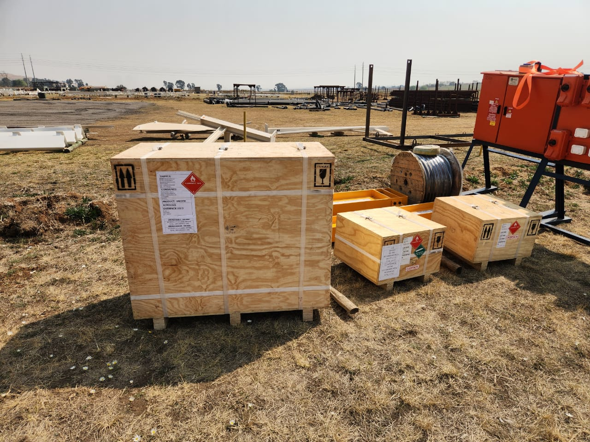
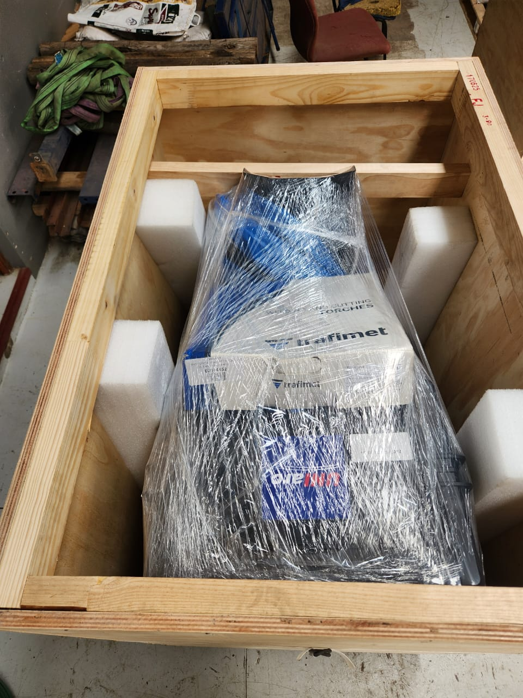
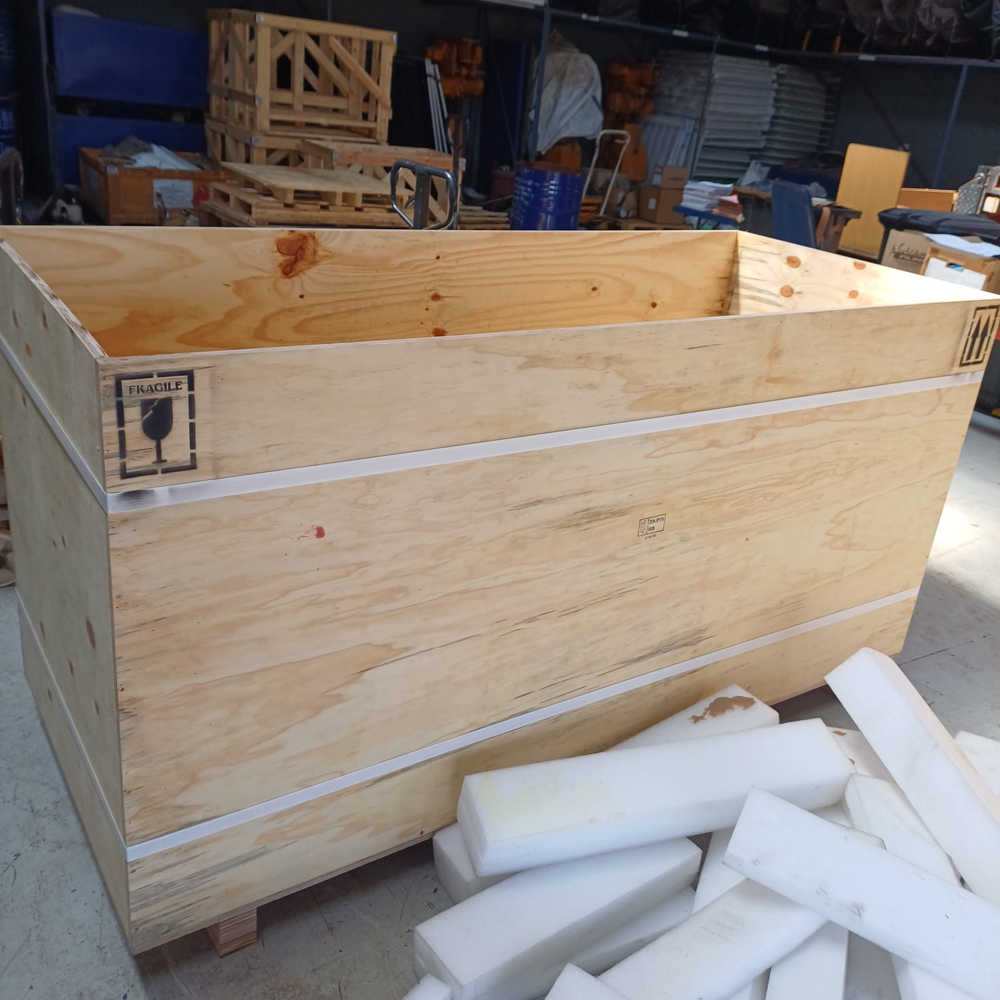
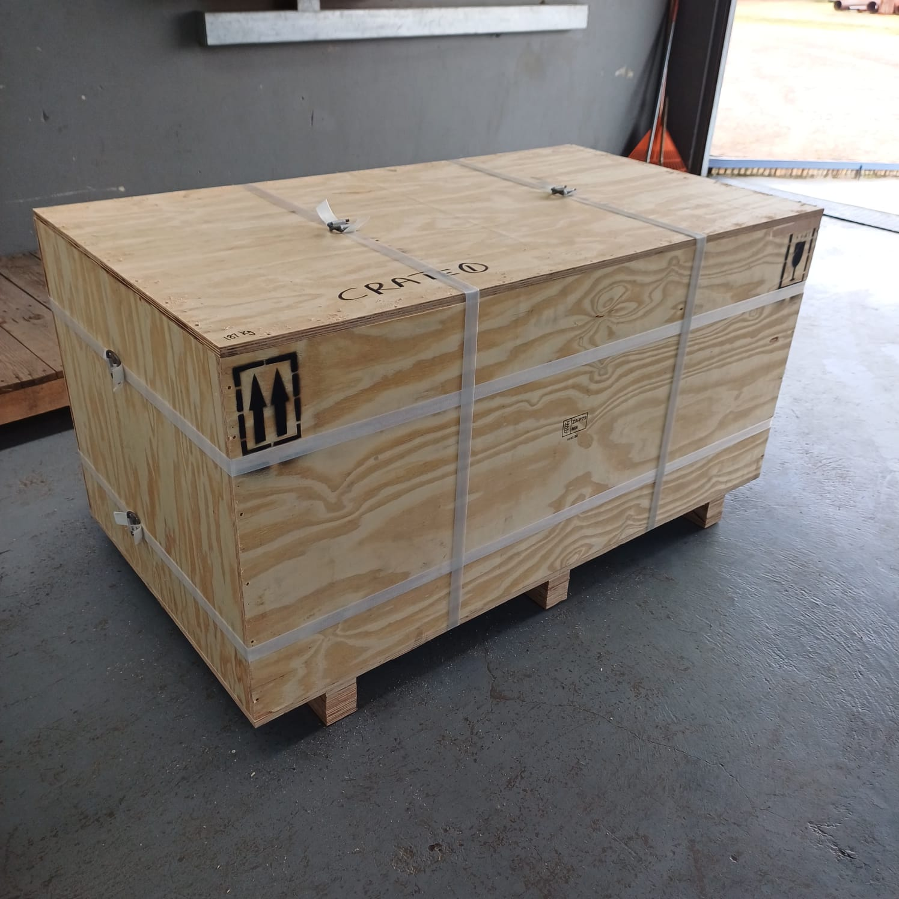
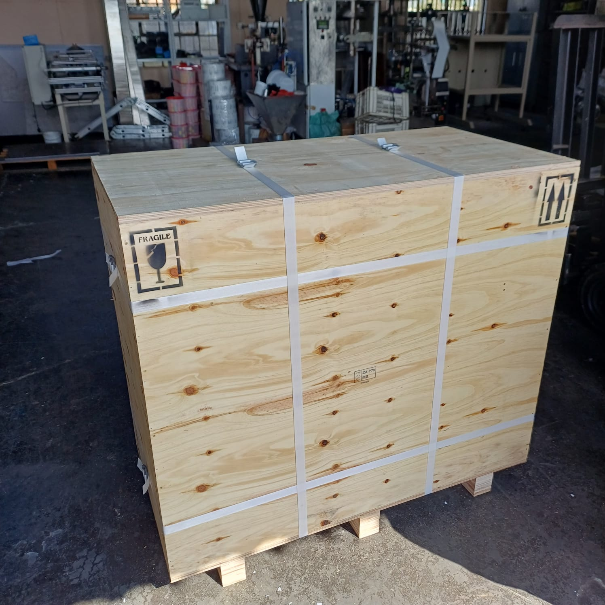

Project detail
Crate build and protected cargo preparation
A reusable project detail page with real business imagery, ready for later project-specific writeups.





Project overview
Prepared for safe movement and clearer handling.
This page can later carry the real story of an individual job. At this stage it shows the intended layout using selected photos: crate construction, internal packing, warning labels, strapping and finished dispatch-ready packaging.
Potential detail blocks
- Scope: crating, foam packing, pallet prep or loading support
- Cargo type: equipment, parts or bulk packaged items
- Protection: internal support, bracing and wrap
- Handling: marked sides, banding and forklift-friendly bases